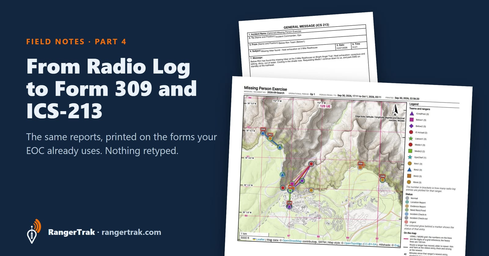

Field Notes · Part 4
From Radio Log to Form 309 and ICS-213

RangerTrak is a free, open-source radio log and map for the scribe at a CERT, ACS/ARES, SAR or wildland-fire command post. Log who, where, when and what off the radio; it maps them. It works offline once set up, and prints the Form 309 Communications Log and the ICS-213. I built it. It’s AGPL and will stay free. Try it at rangertrak.org, no account or install needed.
Everything in RangerTrak starts as one report: who, where, when, what. Most reports only need to sit in order in the record, so anyone can rebuild the incident later. A few need to become an addressed message to a specific person. And at the end of an operational period, someone has to hand paper to an EOC or an ESF-2 desk that has its own form numbers and doesn’t care how you got there. This post is about that last mile: the same reports, printed on the forms people downstream already expect, without retyping a word.
The Radio Log is the record, and you can correct it
Every report you submit lands in the Radio Log, a grid you can sort, filter and rearrange. Click a column heading to sort by it, or drag it to put the columns in the order you read a log. Corrections happen right in the grid. Address, Lat and Lng open with a single click, everything else with a double click, and there’s no Save button: an edit counts the moment you make it. A scribe fixing a transposed digit mid-net doesn’t have time for a save-and-confirm dance.
When you need the log somewhere else, Export writes it to a CSV file. You pick the separator, and by default only the rows you’ve filtered and sorted go out, which is usually the slice someone asked for. Tick All rows for everything. The Report Packet buttons on the same page bring in reports from a field phone; that’s the next post.
A note is not a message
Every report has a free-text Notes field: what happened, what the team needs, why. Notes always save, they show in the Radio Log, and they feed the 309 below. That’s the general record, and most reports never need more.

A 213 message is different on purpose. Tick Also generate an ICS-213 (General Message) from this report on the entry screen and a box opens: who it’s addressed to (Incident Commander, Ops, Logistics and the rest, plus anyone you type in), whether a reply is requested, a subject, and its own message text. The message is typed separately from your notes rather than copied from them, because the two have different readers. Your notes are for whoever reconstructs the incident later. A 213 is a specific ask to a specific person, now. Most reports don’t need one.
The Messages page, and a form that isn’t ours

Every report with that box ticked shows up on Messages, and only those: a short, addressed list, not another copy of the log. Click one to read it in full, with the subject, who it’s to, whether a reply was requested, the time, the station it came from and the operator who logged it. Edit fixes the subject, recipients, text or reply flag afterwards, since the version radioed in under pressure isn’t always the one you want on file. If the message has already been printed, it warns you first: a copy may already be out the door.

Print is the point of the page. It doesn’t draw something that looks like a 213. It fills in FEMA’s own fillable ICS-213, the form your EOC already keeps a stack of: incident name, to, from, subject, date and time, the message, and the operator’s name on the “Approved by” line. Set Copies first if the desk wants more than one. Save PDF gives you the file instead, to email or keep. The Reply block stays blank on purpose. Whoever receives the message writes that by hand, and an answer nobody gave would be worse than an honest blank. If every message goes to paper anyway, tick Print this ICS-213 as soon as I submit on the entry screen and skip the trip to Messages.
The 309: the whole log, not one message

Back on the Radio Log page, the Print ICS-309 log card turns a set of reports into a communications log. The ICS-309 form layout follows the standard form: incident name and operational period at the top, then one row per report in time order, with who it came from, who it went to, and the message, shown as the report’s status in brackets followed by its notes. Simple list is the same log without the boxes.
The Scope picker decides which reports go in: the rows filtered and sorted on screen, only the ones you’ve selected, or everything since the last print. That last one is the default, and it’s the one for a shift change: exactly what’s new since the last handoff, and nothing you’ve already passed on. The message numbers and the net and operator boxes stay blank for hand entry, as they would on paper.
Who wrote it down
Below the entry form sits one more field: Operator (your name). That’s not who the report is about but who’s at the keyboard. It carries from one entry to the next, so a scribe doesn’t retype their own name every time, and once set it shrinks to a quiet “Operator: name” line with an Edit button. The name is fixed on each report when you submit it and never rewritten, even when someone else takes the keyboard next shift. A shift change should never quietly change who logged what.
That name is what lands on the 213’s “Approved by” line. The 309 has no single “Prepared by” filled in, because a log usually spans more than one operator’s shift. RangerTrak leaves that line for whoever prints it to sign, rather than picking one name and hoping it’s right.
And keep paper nearby. A pad of blank 213s and a 309 on a clipboard have never needed a charged battery. If the laptop goes down mid-shift, carry on by hand and type it in later.
Try it in ten minutes
- Load a demo mission if this device doesn’t already have one: pick one from Load a demo on the entry screen, or Mission → Danger zone → pick a demo scenario → Load sample mission.
- On the entry screen, fill in Operator, tick Also generate an ICS-213, address it to someone, and submit a report.
- Open Radio Log, correct something by clicking a cell, and watch it save with no button.
- Open Messages, pick your message, and press Save PDF (or Print). Look at the actual form.
- Back on Radio Log, choose a Scope and the ICS-309 form layout, press Print 309 Log, and see the same reports as one log.
Rather be led through it? Module 7 of the RangerTrak Tour Guide, After the mission, walks you through it hands-on. New to RangerTrak? Start the tour.
Tell me
- Would your EOC or ESF-2 desk accept these as printed? Look at the actual 213 and the actual 309. What’s wrong, missing or in the wrong place compared with what your desk expects?
- Does “a note is not a message” match how your team works, or is that split new to you?
- Is “since the last print” the right shift-change scope, or does your team hand off some other way?
Use the feedback form (start with “Blog 4”), Help → feedback inside the app, or email RangerTrak [at] steadyeoc [dot] com. A photo of a real, correctly filled-out 213 or 309 from your agency, with anything sensitive blacked out, would tell me more than any description could.
The series
- The Paper Log, Without the Paper
- Hot, Warm, Cold
- However They Read It Out: coordinates and maps
- From Radio Log to Form 309 and ICS-213 (this post)
- More Than One Laptop
- What’s Missing, and Who Decides
- Your Roster Is Already in a Spreadsheet
- Shift Change: Op Periods, Scribes and Laptops
- After the Mission: Summaries, AAR and the Final Report
- Field Phones, Up Close
- RangerView
- People, Teams and Places: help me get this right
Next: More Than One Laptop. A ranger’s own phone sending its reports home, a Report Packet that only ever adds and never overwrites, and an optional live view for whoever is running the command post.